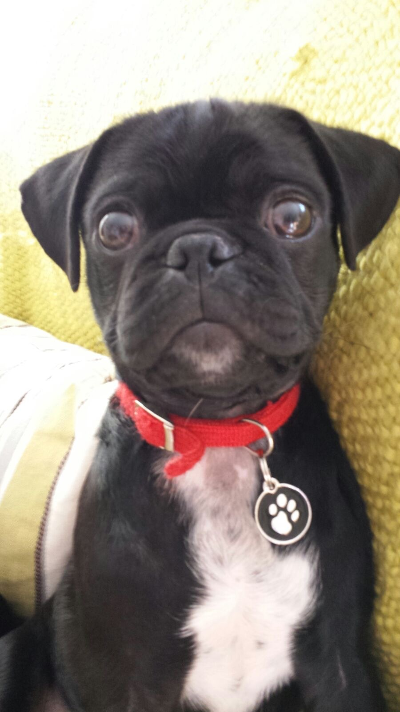

"I didn't choos the Pug Life
The Pug life chose me"
Welcome to our complete pet owners guide to Jugs – so just what is a Jug dog or puppy?
What happens when you cross a Pug with a Jack Russell Terrier?
Welcome to our complete pet owners guide to Jugs – so just what is a Jug dog or puppy?
What happens when you cross a Pug with a Jack Russell Terrier?